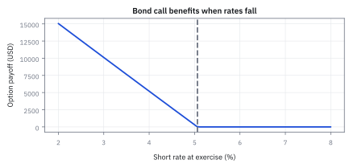
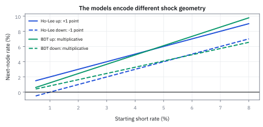

20.3 Rate Lattices: Ho-Lee and Black-Derman-Toy
ต้นไม้สองกิ่งของอัตราดอกเบี้ยระยะสั้นบอกว่าอัตราในอนาคตกระจายอย่างไร ปรับทีละชั้นให้ราคา zero ตรง curve วันนี้ แล้วใช้ตั้งราคาสัญญาที่จ่ายเฉพาะบางสถานการณ์
นักลงทุนถือ call แบบยุโรปอายุ 1 ปี บน zero-coupon bond ที่ครบกำหนดในปีที่ 1.5 หน้าตั๋ว \$1,000,000 strike 0.975 ต่อ \$1 short rate วันนี้คือ 5% ต่อปี (ทบต่อเนื่อง) อีกครึ่งปีจะเป็น 6% หรือ 4% และที่ปีที่ 1 จะเป็น 7%, 5% หรือ 3% ครึ่งต่อครึ่งทุกกิ่ง (ตัวเลขสมมติ) เพื่อนใช้อัตรากลาง 5% ที่ปีที่ 1: พันธบัตรตอนนั้นราคา 0.975310 ได้ payoff \$309.91 คิดลดกลับมาได้ \$294.80 ถูกไหม?
ลองตอบก่อนเปิดเฉลย
ไม่ถูก ราคาที่ถูกคือ \$2,564.15 เกือบเก้าเท่า option จ่ายแบบไม่สมมาตร ถ้าอัตราปีที่ 1 ลงเป็น 3% พันธบัตรราคา 0.985112 และ payoff เป็น \$10,111.94 ถ้าขึ้นเป็น 7% payoff เป็นศูนย์ ไม่ติดลบ ค่าเฉลี่ยของอัตรามองไม่เห็นก้อนนี้ ต้องมีต้นไม้ของอัตราทั้งต้น
ภาพรวมก่อนลงสูตร
ตอนคิด zero rate และ forward กับ swap เงินทุกก้อนล็อกได้ด้วยสัญญาเชิงเส้น จึงใช้แค่ discount factor ของวันนี้ สัญญาที่มีทางเลือกไม่เป็นแบบนั้น option จ่ายเฉพาะเมื่ออัตราไปทางหนึ่ง จึงต้องรู้ว่าอัตราในอนาคตกระจายอย่างไร เครื่องมือที่ง่ายที่สุดคือต้นไม้สองกิ่งแบบ binomial tree ของหุ้น แต่สิ่งที่แตกกิ่งคือ short rate อัตราของงวดถัดไปหนึ่งงวด
รูปด้านล่างคือต้นไม้ของโจทย์เปิดหน้า ตัวเลขสีน้ำเงินเหนือแต่ละจุดคือ short rate ตัวเลขสีส้มใต้จุดคือราคาของ zero ที่จ่าย \$1 ในปีที่ 1 ซึ่งเติมจากขวาไปซ้าย: ที่ปลายทางราคาคือ 1 ทุกจุด ถอยหนึ่งชั้นด้วยการเฉลี่ยสองลูกแล้วคิดลดด้วยอัตราของจุดนั้นเอง นี่คือกลไกทั้งหมด ที่เหลือคือการทำให้ต้นไม้ตรงตลาด
หน้านี้จะตั้งราคาพันธบัตรด้วยการเดินย้อน หาราคาของเงินที่จ่ายเฉพาะจุดเดียว (state price) ด้วยการเดินหน้า ตอบโจทย์เปิดหน้า บังคับต้นไม้ให้ตรง curve ของตลาดด้วยวิธีของ Ho–Lee และ Black–Derman–Toy (BDT) แล้วใช้ต้นไม้ตัวอย่างมาตรฐานตั้งราคา zero, option อเมริกัน, forward และ futures ก่อนจะเห็นว่าทำไมการ fit curve อย่างเดียวยังไม่พอ
รูป — ต้นไม้ short rate และราคา zero ที่เติมจากขวาไปซ้าย
ศัพท์ที่ใช้ในหัวข้อนี้
- Short rate
- อัตราดอกเบี้ยของงวดถัดไปหนึ่งงวด ซึ่งรู้ค่าตอนต้นงวด เป็นตัวแปรเดียวที่ต้นไม้เก็บ ราคาพันธบัตรทุกอายุคำนวณจากมัน
- Recombining lattice
- ต้นไม้ที่ขึ้นแล้วลงกับลงแล้วขึ้นมาถึงจุดเดียวกัน จำนวนจุดจึงโตตามจำนวนงวดแบบเส้นตรง ไม่ใช่เท่าตัวทุกงวด
- Risk-neutral probability $q$
- น้ำหนักของกิ่งขึ้นที่ใช้ตั้งราคา ไม่ใช่โอกาสจริง short rate ซื้อขายไม่ได้ จึงกำหนด $q$ เองตรง ๆ (หน้านี้ใช้ครึ่งต่อครึ่ง) แล้วไปปรับอัตราให้ตรงตลาดแทน
- State price (Arrow–Debreu, elementary price)
- ราคาวันนี้ของเงิน \$1 ที่จ่ายเฉพาะจุดเดียวของต้นไม้ รวมทั้งน้ำหนัก $q$ และการคิดลดไว้แล้ว หาครั้งเดียวแล้วใช้ตั้งราคาได้ทุกสัญญา
- Calibration
- การเลือกค่าในต้นไม้ให้ราคาที่ต้นไม้คำนวณตรงกับราคาตลาดของตราสารที่ซื้อขายคล่อง ก่อนนำไปตั้งราคาของที่ไม่มีราคาตลาด
- Ho–Lee และ Black–Derman–Toy (BDT)
- สองวิธีวางอัตราในแต่ละชั้น Ho–Lee วางให้ห่างกันเป็นจำนวนจุดเท่ากัน (อัตราติดลบได้) BDT วางให้ห่างกันเป็นสัดส่วนเท่ากัน (อัตราเป็นบวกเสมอ)
- Cash account
- บัญชีที่เริ่มที่ \$1 แล้วทบด้วย short rate ทีละงวด ปลอดภัยทีละงวดแต่ไม่ปลอดภัยเมื่อมองหลายงวด ใช้เป็นตัวหารของราคาทุกตัว
สัญลักษณ์และหน่วย
| สัญลักษณ์ | ความหมาย | หน่วย |
|---|---|---|
| $\Delta t$ | ความยาวหนึ่งงวดของต้นไม้ | ปี |
| $r_{n,j}$ | short rate ที่ชั้น $n$ จุด $j$ | ต่อปี หรือต่องวด |
| $q$ | น้ำหนักของกิ่งขึ้น (หน้านี้ $\tfrac12$) | ไม่มีหน่วย |
| $Q_{n,j}$ | state price ของจุด $(n,j)$ | ดอลลาร์วันนี้ต่อดอลลาร์ที่จุดนั้น |
| $D(0,t_n)$ | discount factor ของตลาดถึงชั้น $n$ | ดอลลาร์ต่อดอลลาร์ |
| $\alpha_n,\ \sigma$ | ระดับของชั้นและความผันผวนของ Ho–Lee | ต่อปี, ต่อ √ปี |
| $a_i,\ b$ | ระดับของชั้นและความผันผวนของ log อัตราใน BDT | ต่องวด, ไม่มีหน่วย |
| $Z_{i,j},\ B_t$ | ราคาพันธบัตรที่จุด $(i,j)$ และ cash account | ดอลลาร์ |
| $G_0,\ F_k$ | ราคา forward วันนี้ และราคา futures ที่งวด $k$ | ดอลลาร์ |
ขั้นที่ 1 — กฎเดียวของต้นไม้: เฉลี่ยสองลูก คิดลดด้วยอัตราของจุดนั้น
ต้นไม้เก็บ short rate ของแต่ละจุด คืออัตราที่ใช้กับงวดถัดไปหนึ่งงวด ที่แต่ละจุด มูลค่าคือค่าเฉลี่ยถ่วงของสองจุดลูก คิดลดหนึ่งงวดด้วยอัตราของจุดนั้นเอง ไม่ใช่อัตราเดียวทั้งต้น ถ้าสัญญาจ่ายเงิน $C$ ที่จุดลูกด้วย ก็บวกเข้าไปก่อนเฉลี่ย นี่คือกฎเดียวที่ใช้ซ้ำทั้งหน้า
ต้นไม้หุ้นได้ $q$ มาจากการเลียนแบบด้วยหุ้นกับเงินฝาก แต่ short rate ซื้อขายไม่ได้ จึงกำหนด $q$ เองตรง ๆ ค่าใดก็ได้ระหว่าง 0 กับ 1 ทำไมยังไม่เปิดช่องเงินฟรี? เพราะทุกราคาคำนวณจากระบบเดียวกันที่ราคาของเงิน \$1 ทุกจุดเป็นบวก ไม่มีพอร์ตไหนที่ได้เงินวันนี้แล้วไม่ต้องจ่ายคืนในสถานการณ์ใดเลย งานยากจึงย้ายไปที่การปรับอัตราให้ราคาตรงตลาด ในทางปฏิบัติตั้ง $q=\tfrac12$ แล้ว calibrate ส่วนที่เหลือ
เขียนอีกแบบด้วย cash account $B_t$ (เงิน \$1 ที่ทบด้วย short rate ทุกงวด) ได้ว่า $Z_t/B_t$ เท่ากับค่าเฉลี่ยของ $Z_{t+1}/B_{t+1}$ ราคาที่หารด้วยบัญชีนี้จึงเป็น martingale ภายใต้น้ำหนัก $q$ แบบเดียวกับ risk-neutral measure ของหุ้น
ขั้นที่ 2 — ราคาพันธบัตรบนต้นไม้: เดินย้อนจากวันครบกำหนด
ลองกับของที่ง่ายที่สุด zero ที่จ่าย \$1 ในปีที่ 1 ที่จุดครึ่งปีมันเหลืออีกงวดเดียว ราคาคือ $e^{-r\Delta t}$ ของจุดนั้น แล้วถอยมาวันนี้อีกงวดด้วยกฎเดียวกัน ตัวเลขทั้งหมดคือสีส้มในรูปต้นไม้ด้านบน
ต้นไม้บอกว่า \$1 ในปีที่ 1 มีค่าวันนี้ 0.951241 ถ้าตลาดบอกตัวเลขอื่น ต้นไม้นี้ยังใช้ตั้งราคาไม่ได้ ต้องปรับจนตรง
สังเกตว่าค่าเฉลี่ยของสอง discount factor คือ 0.975322 สูงกว่า discount factor ของอัตรากลาง 5% ซึ่งคือ 0.975310 เล็กน้อย เพราะ $e^{-x}$ โค้งหงาย ค่าเฉลี่ยของมันจึงมากกว่าค่าที่จุดเฉลี่ย (Jensen) ความต่างเล็ก ๆ นี้จะกลับมาตอน calibrate: ยิ่งอัตรากระจายกว้าง ระดับของต้นไม้ต้องสูงขึ้นเล็กน้อยเพื่อให้ราคาเท่าเดิม
ขั้นที่ 3 — state price: ราคาของ \$1 ที่จ่ายเฉพาะจุดเดียว
เดินย้อนทีละสัญญาใช้ได้ แต่ถ้าต้องตั้งราคาหลายสัญญามีทางลัด: หาราคาวันนี้ของเงิน \$1 ที่จ่ายเฉพาะจุด $(n,j)$ จุดเดียว เรียกว่า state price $Q_{n,j}$ เงินก้อนนั้นที่ชั้นก่อนหน้ามีค่าไม่เป็นศูนย์แค่ที่พ่อแม่สองจุด จุดละ $\tfrac12e^{-r\Delta t}$ ให้ $j$ นับจากบนลงล่าง จุด $(n+1,s)$ มาจาก $(n,s)$ ด้วยการลง และจาก $(n,s-1)$ ด้วยการขึ้น
แถวแรกคือเงิน \$1 ที่จุด $(n+1,s)$ ตีราคากลับไปที่พ่อแม่ แล้วคูณ state price ของพ่อแม่ ($Q_{0,0}=1$) จุดกลางมาได้สองทาง แต่ละทางราคาต่างกันเพราะคิดลดด้วยอัตราของพ่อแม่คนละจุด (6% หรือ 4%) ต้องบวกทั้งสองทาง สมการนี้เดินจากซ้ายไปขวา จึงเรียกว่า forward equations
state price รวม $q$ และการคิดลดไว้แล้ว จึงไม่ใช่โอกาส (รวมกันได้ 0.951241 ไม่ใช่ 1) ผลบวกของชั้นปีที่ 1 ตรงกับราคา zero ที่เพิ่งได้จากการเดินย้อนทุกหลัก สองวิธีคนละทิศได้ตัวเลขเดียวกัน นี่คือการตรวจที่สำคัญที่สุดของต้นไม้ และเมื่อมี state price ราคาของสัญญาใดก็ตามคือผลบวกของ (เงินที่จ่ายที่จุดนั้น × state price ของจุดนั้น)
รูป — state price ไหลจากซ้ายไปขวาและรวมกันที่จุดกลาง
ขั้นที่ 4 — คำตอบของโจทย์เปิดหน้า: call บน zero-coupon bond
โจทย์ให้อะไรมาบ้าง: call หมดอายุปีที่ 1 บน zero ที่ครบกำหนดปีที่ 1.5 หน้าตั๋ว \$1,000,000 strike 0.975 ต่อ \$1 ที่วันใช้สิทธิ์พันธบัตรเหลือครึ่งปี และอัตราของครึ่งปีนั้นรู้แล้ว ราคาพันธบัตรจึงเป็น $e^{-r(0.5)}$ ของแต่ละจุด และ state price ของสามจุดได้มาแล้ว
คำตอบ: \$2,564.15 payoff เป็นเงินที่ปีที่ 1 และ state price ย้ายมันมาวันนี้ในขั้นเดียว ไม่ต้องคิดลดซ้ำ วิธีอัตรากลางตัวเดียวได้ $309.91(0.951241)=\$294.80$ ต่ำไปเกือบเก้าเท่า เพราะมูลค่าเกือบทั้งหมด (\$2,416.75) มาจากจุดอัตรา 3% ซึ่งค่าเฉลี่ยมองไม่เห็น
ตรวจเองใน 10 วินาที: $(0.985112-0.975)(1{,}000{,}000)=10{,}111.94$ คูณ state price ราว 0.24 ได้ราว \$2,400 เป็นก้อนใหญ่ของคำตอบ
รูป — call บนพันธบัตรมีค่าเฉพาะเมื่ออัตราต่ำ

แกนนอนคือ short rate ตอนใช้สิทธิ์ 2% ถึง 8% แกนตั้งคือ $10^6(e^{-0.5r}-0.975)^+$ เป็นดอลลาร์ เส้นประคืออัตรา $-\ln(0.975)/0.5=5.0636\%$ ที่พันธบัตรราคาเท่า strike พอดี ต่ำกว่านั้น payoff เพิ่มราว \$4,900 ต่อทุก 1 จุดที่อัตราลดลง (\$15,050 ที่ 2%) สูงกว่านั้นเป็นศูนย์ รูปหักมุมนี้คือเหตุที่ต้องรู้การกระจายของอัตรา ไม่ใช่แค่ค่าเฉลี่ย
ขั้นที่ 5 — Ho–Lee: ปรับระดับทีละชั้นให้ตรง curve ของตลาด
ต้นไม้ที่ตั้งด้วยมือให้ราคา zero ตามใจเรา ต้นไม้จริงต้องให้ราคา zero ตรงกับ curve ของตลาดทุกอายุ Ho–Lee วางอัตราแบบบวก: ทุกจุดในชั้นเดียวกันห่างกันเท่ากัน $2\sigma\sqrt{\Delta t}$ และเลื่อนทั้งชั้นด้วยระดับ $\alpha_n$ ซึ่งเป็นตัวไม่รู้ตัวเดียวต่อชั้น เงื่อนไขมาจาก state price: ราคา zero ที่ครบกำหนดชั้นถัดไปคือผลบวกของ state price คูณการคิดลดหนึ่งงวด และต้องเท่ากับ discount factor ของตลาด
$\alpha_n$ เลื่อนทุกจุดในชั้นเท่ากัน $e^{-\alpha_n\Delta t}$ จึงดึงออกนอกผลบวกได้ เหลือสมการเดียวตัวไม่รู้เดียวต่อชั้น แก้จากชั้นแรกไปชั้นหลังแบบ bootstrapping ต้นไม้ของโจทย์เปิดหน้าคือ Ho–Lee ที่ $\alpha_n=5\%$ ทุกชั้นและ $\sigma\sqrt{0.5}=1\%$ หรือ $\sigma=1.4142\%$ ต่อ √ปี อีกวิธีเขียนที่พบบ่อยคือ $r_{i,j}=a_i+b_ij$ ให้ $j$ นับจำนวนครั้งที่ขึ้น มีพารามิเตอร์ $2n$ ตัว และส่วนเบี่ยงเบนมาตรฐานของอัตรางวดเดียวคือ $b_i/2$
ลอง calibrate กับ curve ที่แกะได้จากพันธบัตร (0.9755, 0.9505, 0.931421875, 0.9059165) ด้วย $\sigma=1\%$ ได้ $\alpha$ = 4.9610, 5.1936, 4.0602 และ 5.5643% ถ้า $\sigma=0$ ได้ 4.9610, 5.1924, 4.0552 และ 5.5530% คือ forward ครึ่งปีของ curve นั้นพอดี (ไม่มีการกระจาย ต้นไม้ก็คือ forward) ความผันผวนดัน $\alpha$ สูงกว่า forward 0.1, 0.5 และ 1.1 bp ด้วยเหตุผลโค้งหงายที่เห็นตอนเดินย้อน
ขั้นที่ 6 — BDT: วางอัตราแบบคูณ อัตราจึงเป็นบวกเสมอ
Ho–Lee ห่างกันเป็นจำนวนจุด ถ้าอัตราต่ำ จุดล่างติดลบได้ BDT วาง log ของอัตราแบบบวกแทน ตัวอัตราจึงคูณกัน: $r_{i,j}=a_ie^{bj}$ ทบต่องวด งวดละปี $\ln a_i$ คือ drift ของ log อัตรา และ $b$ คือความผันผวนของมัน แล้วแก้ $a_i$ ทีละชั้นให้ตรงกับ spot rate $s_{i+1}$ ของตลาด
เส้น spot ทบรายปีของตัวอย่าง (สมมติ) คือ 7.30, 7.62, 8.10, 8.45, 9.20, 9.64, 10.12, 10.45, 10.75 และ 11.22% ตรึง $b=0.005$ งวดแรกมีจุดเดียว $a_0=7.30\%$ state price ของสองจุดปีที่ 1 คือ 0.465983 แก้สมการได้ $a_1=7.9211\%$ ต่อไปได้ $a_2$ ถึง $a_4$ = 9.0212, 9.4357 และ 12.1302%
ฝั่งขวาลดลงเมื่อ $a_i$ เพิ่ม (อัตราสูง คิดลดมาก) จาก $\sum_jQ_{i,j}$ ที่ $a_i=0$ ลงไปหาศูนย์ จึงมีคำตอบบวกเดียวเสมอเมื่อ curve ไม่บังคับให้อัตราติดลบ และหาได้ด้วย bisection หรือ Solver ใน Excel ทีละชั้น ไม่ต้องแก้ทุกชั้นพร้อมกัน
รูป — Ho–Lee ขยับเป็นจำนวนจุด BDT ขยับเป็นสัดส่วน

แกนนอนคืออัตราเริ่มต้น 0.5% ถึง 8% แกนตั้งคืออัตราของจุดถัดไป เส้นน้ำเงินคือ Ho–Lee ขึ้นหรือลง 1 จุดเท่ากันทุกระดับ เส้นเขียวคือ BDT คูณด้วย $e^{\pm0.2}$ ที่อัตรา 5% Ho–Lee ให้ 6% กับ 4% BDT ให้ 6.107% กับ 4.094% แต่ที่อัตรา 0.5% Ho–Lee ลงไปถึง −0.5% ขณะที่ BDT เหลือ 0.409% ตัวเลข ±1 จุดและ 0.2 เลือกให้ใกล้กันที่ 5% เพื่อเทียบรูปร่าง ไม่ได้ calibrate กับตลาด
ขั้นที่ 7 — ต้นไม้ตัวอย่างมาตรฐาน: เริ่ม 6% ขึ้นคูณ 1.25 ลงคูณ 0.9
ต้นไม้ที่ใช้ฝึกกันแพร่หลายทบต่องวด (คิดลดด้วย $1+r$) short rate เริ่ม 6% แต่ละงวดคูณ 1.25 หรือ 0.9 ครึ่งต่อครึ่ง ให้ $j$ นับจำนวนครั้งที่ขึ้น ตั้งราคา zero หน้าตั๋ว 100 ที่ครบกำหนดงวดที่ 4 ด้วยการเดินย้อน รูปถัดไปสองรูปคืออัตราและราคาของต้นไม้นี้
ต้นไม้ recombine เพราะ $1.25(0.9)=0.9(1.25)$ state price ทบต่องวดใช้ forward equations เดิมโดยแทน $e^{-r\Delta t}$ ด้วย $1/(1+r)$ ชั้นที่ 4 ได้ 0.0511, 0.1992, 0.2901, 0.1868 และ 0.0449 (อัตราต่ำไปสูง) คูณ 100 แล้วบวกได้ 77.22 ตรงกับการเดินย้อน
ทำแบบนี้ทุกอายุได้ spot 6.00, 6.22, 6.45, 6.68 และ 6.91% short rate ตัวเดียวจึงให้ทั้งเส้น และพรุ่งนี้เมื่ออยู่ที่จุดใหม่ ราคา zero ชุดใหม่ก็ให้เส้นใหม่ แบบจำลองของ short rate จึงเป็นแบบจำลองของทั้ง term structure ต้นไม้แบบคูณนี้ไม่มีแรงดึงกลับ อัตราบนสุดที่งวดที่ 5 ลอยไปถึง 18.31% ใช้ฝึกวิธีคิด ไม่ใช่ใช้งานจริง
cash account $B_t=(1+r_0)\cdots(1+r_{t-1})$ ปลอดภัยทีละงวดแต่ไม่ปลอดภัยสองงวด: $B_2$ เป็น 1.1395 หรือ 1.11724 ตามว่างวดแรกขึ้นหรือลง
รูป — short rate ของต้นไม้ 6% ขึ้น ×1.25 ลง ×0.9
รูป — ราคา zero ที่ครบกำหนดงวดที่ 4 เติมจากขวาไปซ้าย
ขั้นที่ 8 — option บนพันธบัตร: call แบบยุโรป และ put แบบอเมริกัน
โจทย์ให้อะไรมาบ้าง: zero 4 งวดในรูปด้านบน ราคาที่งวดที่ 2 คือ 90.64, 87.35 และ 83.08 และที่งวดที่ 3 คือ 95.81, 94.27, 92.22 และ 89.51 (อัตราต่ำไปสูง) call strike 84 หมดอายุงวดที่ 2 และ put แบบอเมริกัน strike 88 หมดอายุงวดที่ 3 ใช้สิทธิ์ได้ทุกงวด ที่แต่ละจุดของ put เลือกค่ามากกว่าระหว่างใช้สิทธิ์ทันทีกับถือต่อ $H$
คำตอบ: call ราคา 2.97 มีค่าเฉพาะจุดที่อัตราต่ำ เพราะพันธบัตรแพง put อเมริกันราคา 10.78 และควรใช้สิทธิ์ทันทีวันนี้ เพราะ $88-77.22=10.78$ มากกว่าค่าของการถือต่อ 5.80 ที่จุดอัตรา 9.38% $\max(88-83.08,\ 0)=4.92$ ใช้สิทธิ์เหมือนกัน ที่งวดที่ 3 พันธบัตรราคาเกิน 88 ทุกจุด put แบบยุโรปที่ strike เดียวกันจึงมีค่าศูนย์ ราคา 10.78 ทั้งก้อนมาจากสิทธิ์ใช้ก่อนกำหนด ซึ่งเป็นผลของตัวเลขที่เลือกฝึก ไม่ใช่พฤติกรรมที่พบบ่อยในตลาด
ตรวจเองใน 10 วินาที: จุดบนของงวดที่ 1 (อัตรา 7.5%): $\tfrac12(0+3.35)/1.075=1.56$ ตรงกับแถวที่สาม
ขั้นที่ 9 — forward กับ futures บนพันธบัตรเดียวกันไม่เท่ากัน
พันธบัตรคูปอง 10 ต่องวด (หน้าตั๋ว 100) ครบกำหนดงวดที่ 6 ส่งมอบที่งวดที่ 4 หลังจ่ายคูปองงวดที่ 4 แล้ว ราคาพันธบัตรตอนส่งมอบ $S_4$ ได้จากการเดินย้อนจากงวดที่ 6: 111.16, 108.00, 103.83, 98.44 และ 91.66 (อัตราต่ำไปสูง) forward มีค่าศูนย์วันเซ็นและจ่ายครั้งเดียวตอนส่งมอบ futures ปรับกำไรขาดทุนทุกงวดและเข้าสัญญาได้ฟรีทุกงวด สองเงื่อนไข “มีค่าศูนย์” นี้ให้สองสูตรต่างกัน
forward: $G_0$ รู้วันนี้จึงดึงออกจากค่าเฉลี่ยได้ ตัวบนคือพันธบัตรตอนส่งมอบคิดลดด้วยต้นไม้ (79.83) ตัวล่างคือราคา zero งวดที่ 4 ต่อ \$1 (0.7722) futures: $B_{k+1}$ รู้ตั้งแต่งวด $k$ จึงตัดทิ้งได้ ราคา futures จึงเป็นค่าเฉลี่ยธรรมดาของสองลูก ไม่คิดลด ถอยจาก $F_4=S_4$ ทีละชั้น ใช้ tower property (ค่าเฉลี่ยของค่าเฉลี่ยแบบมีเงื่อนไขคือค่าเฉลี่ยเดิม) ได้ $F_0=\mathbb E^{\mathbb Q}_0[S_4]$
สองราคาต่างกัน 0.16 เพราะอัตรากับราคาพันธบัตรเดินสวนกัน วันที่พันธบัตรขึ้นคือวันที่อัตราลง กำไรจาก futures จึงถูกนำไปฝากตอนอัตราต่ำ ส่วนขาดทุนต้องหาเงินมาจ่ายตอนอัตราสูง ฝั่งซื้อ futures จึงเสียเปรียบเล็กน้อย ราคาที่ยุติธรรมต้องต่ำกว่า forward ถ้าอัตราไม่สุ่ม สองราคานี้จะเท่ากัน แบบที่ mark-to-market ของ futures สมมติไว้
ขั้นที่ 10 — fit curve ได้พอดี ยังไม่ได้บอกอะไรเรื่องความผันผวน
Ho–Lee และ BDT fit ราคา zero ได้พอดีไม่ว่าจะเลือก $\sigma$ หรือ $b$ เท่าไร เพราะระดับของชั้นปรับตามเสมอ ลอง BDT กับเส้น spot เดียวกันสองครั้ง: $b=0.005$ และ $b=0.01$
ทั้งสองต้นไม้ให้ราคา zero ทั้งสิบอายุตรงตลาดทุกตัว (แถวสุดท้าย) ต่างกันแค่ว่าอัตรากระจายกว้างแค่ไหน ราคา zero จึงไม่มีข้อมูลเรื่องความผันผวนเลย แต่ราคา option ไวต่อมันมาก บน swaption ของต้นไม้ BDT สองต้นนี้ให้ราคาต่างกันเกือบครึ่ง
งานจริงจึงเลือกพารามิเตอร์ $\theta$ (ระดับและความผันผวนทุกชั้น) ให้ผลรวมกำลังสองของ (ราคาแบบจำลอง − ราคาตลาด) ถ่วงน้ำหนักต่ำสุด ตราสารที่ใช้ต้องรวม option ที่ซื้อขายคล่อง เช่น cap และ swaption และควรใกล้กับของที่จะตั้งราคา มักบวกโทษ $\lambda\lVert\theta-\theta_{\rm prev}\rVert^2$ ไม่ให้พารามิเตอร์กระโดดจากผลเมื่อวาน ปัญหานี้ไม่ใช่ convex มีจุดต่ำสุดเฉพาะที่หลายจุด และต้อง calibrate ใหม่หลายครั้งต่อวัน ถ้าแบบจำลองถูกจริง calibrate ครั้งเดียวก็พอ การที่ต้องทำซ้ำบอกว่าไม่มีแบบจำลองไหนถูก งานตั้งราคาอนุพันธ์จึงเป็นการ interpolate และ extrapolate จากราคาที่เห็นไปหาราคาที่ไม่เห็น โดยไม่เปิดช่องเงินฟรี (ดู สูตร calibration ที่ใช้งานจริง)
ความผิดที่ให้คำตอบผิดแบบเงียบ ๆ
ใช้อัตรากลางตัวเดียวกับ option: ได้ \$294.80 แทน \$2,564.15 ของโจทย์เปิดหน้า payoff ที่หักมุมต้องการการกระจายทั้งหมด
ลืมเส้นทางที่สองของจุดกลาง: ใช้แค่ทางจากจุดบน ได้ $Q_{2,1}=0.236621$ แทน 0.475621 ผลบวกของชั้นเหลือ 0.712 ไม่ใช่ 0.951 และราคา call เหลือ \$2,490.08 แทน \$2,564.15
คิดลดซ้ำหลังคูณ state price: $2{,}564.15(0.951241)=\$2{,}439.12$ ผิดไป \$125.02 state price เป็นเงินวันนี้อยู่แล้ว
อ่าน state price เป็นโอกาส: ผลบวกของชั้นคือราคา zero (0.951241) ไม่ใช่ 1 ถ้าหารด้วยผลบวกเพื่อให้เป็นโอกาส ต้องคูณ discount factor กลับเข้าไป
เชื่อว่า fit curve แล้วราคา option ถูก: $b=0.005$ และ $b=0.01$ fit curve เดียวกันพอดี แต่ให้ swaption ต่างกันเกือบครึ่ง
ใช้ Ho–Lee ตอนอัตราต่ำโดยไม่ตรวจ: ที่อัตรา 0.5% ระยะ 1 จุดทำให้จุดล่างเป็น −0.5% ถ้าสัญญาขึ้นกับอัตราใกล้ศูนย์ ต้องดูว่าอัตราติดลบเป็นไปได้จริงในตลาดนั้นหรือไม่
ใช้ทำอะไรบนโต๊ะจริง
ตลาดตราสารหนี้ใหญ่กว่าตลาดหุ้น ไตรมาสที่ 3 ปี 2012 พันธบัตรสหรัฐฯ ที่ค้างอยู่มีมูลค่า \$35.3 ล้านล้าน (รัฐบาล 30.4% บริษัท 24.3% mortgage 23.3% ท้องถิ่น 10.5% agency 6.7% และ asset-backed 4.8%) เทียบตลาดหุ้นสหรัฐฯ ราว \$26 ล้านล้าน อนุพันธ์บนตลาดนี้ต้องใช้แบบจำลองของทั้ง curve ต้นไม้ของหน้านี้คือเครื่องมือพื้นฐานที่สุด แบบจำลองต่อเนื่องอย่าง Vasicek และ CIR มีพารามิเตอร์คงที่ไม่กี่ตัว จึงทำให้ราคา zero ทุกอายุตรง curve พร้อมกันไม่ได้ ต้นไม้ที่มีระดับหนึ่งตัวต่อชั้นทำได้พอดี
โต๊ะใช้ต้นไม้ที่ calibrate แล้วตั้งราคาพันธบัตรที่ผู้ออกไถ่ถอนก่อนได้ option บนพันธบัตร และ swaption ที่ใช้สิทธิ์ได้หลายวัน ทุกครั้งตรวจว่าผลบวกของ state price แต่ละชั้นตรง curve ตรวจว่าราคาไม่เปลี่ยนเมื่อซอยงวดให้ถี่ขึ้น และรายงานความไวต่อทั้ง curve และความผันผวน ใน Excel ต้นไม้สร้างได้ด้วยช่องอัตราเริ่ม ช่อง $u$ ช่อง $d$ และช่องจำนวนงวด แต่ละช่องในต้นไม้เป็น $d$ คูณช่องทางซ้าย หรือถ้าไม่มี ก็เป็น $u$ คูณช่องซ้ายล่าง และว่างไว้ถ้าเกินจำนวนงวด เช่น 6% กับ $u=1.1$ $d=0.9$ หกงวด ชั้นสุดท้ายได้ 3.19% ถึง 10.63%
โจทย์ตรวจความเข้าใจ
1. บนต้นไม้ของโจทย์เปิดหน้า zero ที่ครบกำหนดปีที่ 1.5 มีราคาเท่าไร?
เฉลย
คูณ state price ปีที่ 1 กับราคาพันธบัตรที่เหลือครึ่งปีแล้วบวก: $0.236621(0.965605)+0.475621(0.975310)+0.238999(0.985112)=0.22848+0.46388+0.23544=0.92780$ เท่ากับผลบวกของ state price ชั้นถัดไป (ปีที่ 1.5) พอดี
2. ถ้าโจทย์เปิดหน้าเป็น put strike 0.975 แทน call ราคาเท่าไร และตรวจด้วย put–call parity อย่างไร?
เฉลย
put จ่ายเฉพาะจุดอัตรา 7%: $10^6(0.975-0.965605)=9{,}394.58$ คูณ 0.236621 ได้ \$2,222.96 parity: call − put = มูลค่าวันนี้ของ $N(P-0.975)$ ทุกจุด $=10^6(0.927801)-0.975(10^6)(0.951241)=927{,}801.47-927{,}460.28=341.19$ และ $2{,}564.15-2{,}222.96=341.19$ ตรงกัน
3. บนต้นไม้ 6% ขึ้น ×1.25 ลง ×0.9 call strike 84 ที่หมดอายุงวดที่ 1 (แทนงวดที่ 2) บน zero 4 งวดเดิม ราคาเท่าไร?
เฉลย
zero 4 งวดที่งวดที่ 1 ราคา 84.43 (อัตรา 5.4%) และ 79.27 (อัตรา 7.5%) payoff คือ 0.43 และ 0 ราคาวันนี้ $\tfrac12(0.4336)/1.06=0.2045$ ถูกกว่า call งวดที่ 2 (2.97) มาก เพราะมีเวลาให้อัตราลงน้อยกว่า และ strike เกือบเท่าราคาสูงสุดที่เป็นไปได้ที่งวดที่ 1
คำนวณซ้ำด้วย JavaScript
เปิดดูโค้ด
const {exp, log, sqrt, max} = Math;
// One-period discount at a node: continuous e^(-r dt), or per-period 1 / (1 + r) when dt is null.
const disc = (r, dt) => dt === null ? 1 / (1 + r) : exp(-r * dt);
// Forward equations for state prices with q = 1/2: node j of layer n + 1 has parents j - 1 and j.
function statePrices(rates, dt) {
const Q = [[1]];
rates.forEach((layer, n) => {
const next = Array(n + 2).fill(0);
layer.forEach((r, j) => { const v = Q[n][j] * 0.5 * disc(r, dt); next[j] += v; next[j + 1] += v; });
Q.push(next);
});
return Q;
}
// Backward induction from layer `from` to 0, keeping every layer; `early(n, j, hold)` may replace the holding value.
function backward(rates, dt, terminal, from, early = (n, j, h) => h) {
const layers = [terminal];
for (let n = from - 1; n >= 0; n--) {
const V = layers[0];
layers.unshift(rates[n].map((r, j) => early(n, j, disc(r, dt) * 0.5 * (V[j] + V[j + 1]))));
}
return layers;
}
// Ho-Lee: r = alpha_n + (n - 2j) sigma sqrt(dt); alpha_n solved so layer n reprices D(0, t_{n+1}).
function hoLee(D, sigma, dt) {
let Q = [1]; const alpha = [], rates = [];
D.forEach((target, n) => {
const x = Q.map((_, j) => (n - 2 * j) * sigma * sqrt(dt));
const H = Q.reduce((s, q, j) => s + q * exp(-x[j] * dt), 0);
const a = -log(target / H) / dt;
alpha.push(a); rates.push(x.map(v => a + v));
Q = statePrices(rates, dt)[n + 1];
});
return alpha;
}
// BDT with per-period compounding: r = a_i e^(b j); a_i by bisection so layer i reprices the spot curve.
function bdt(spot, b) {
let Q = [1]; const a = [];
spot.forEach((s, i) => {
const target = 1 / (1 + s) ** (i + 1);
const f = ai => Q.reduce((sum, q, j) => sum + q / (1 + ai * exp(b * j)), 0) - target;
let lo = 0, hi = 1;
for (let k = 0; k < 200; k++) { const m = (lo + hi) / 2; if (f(m) > 0) lo = m; else hi = m; }
const ai = (lo + hi) / 2; a.push(ai);
const next = Array(i + 2).fill(0);
Q.forEach((q, j) => { const v = q / (2 * (1 + ai * exp(b * j))); next[j] += v; next[j + 1] += v; });
Q = next;
});
return a;
}
// Toy tree (continuous, dt = 0.5), each layer listed from the highest rate down.
const toy = [[0.05], [0.06, 0.04], [0.07, 0.05, 0.03]];
const Qt = statePrices(toy.slice(0, 2), 0.5);
const payoff = toy[2].map(r => 1e6 * max(exp(-r * 0.5) - 0.975, 0));
const oneYear = Qt[2].reduce((s, q) => s + q, 0);
const curve = [0.9755, 0.9505, 0.931421875, 0.9059165396341463]; // discount factors stripped from bonds
// 6% tree: per-period rates, up x1.25, down x0.9; j counts up moves (j = 0 is the lowest rate).
const tree = Array.from({length: 6}, (_, i) => Array.from({length: i + 1}, (_, j) => 0.06 * 1.25 ** j * 0.9 ** (i - j)));
const Qc = statePrices(tree, null);
const Z = backward(tree, null, Array(5).fill(100), 4); // zero maturing at t = 4, every layer
const call = backward(tree, null, Z[2].map(z => max(z - 84, 0)), 2);
const putPay = Z[3].map(z => max(88 - z, 0));
const putA = backward(tree, null, putPay, 3, (n, j, h) => max(88 - Z[n][j], h));
const V5 = tree[5].map(r => 110 / (1 + r) + 10); // 10% coupon bond maturing at t = 6
const S4 = backward(tree, null, V5, 5)[4]; // ex-coupon price at delivery t = 4
const discountedS4 = backward(tree, null, S4, 4)[0][0];
let fut = S4; for (let n = 3; n >= 0; n--) fut = fut.slice(0, n + 1).map((_, j) => 0.5 * (fut[j] + fut[j + 1]));
const spot = [7.30, 7.62, 8.10, 8.45, 9.20, 9.64, 10.12, 10.45, 10.75, 11.22].map(x => x / 100);
console.log(JSON.stringify({
toy: {Q2: Qt[2], oneYear, zero: backward(toy, 0.5, [1, 1, 1], 2)[0][0], payoff,
call: payoff.reduce((s, x, j) => s + x * Qt[2][j], 0), singleRate: 1e6 * (exp(-0.05 * 0.5) - 0.975) * oneYear,
zero15: statePrices(toy, 0.5)[3].reduce((s, q) => s + q, 0)},
hoLee: {sigma1: hoLee(curve, 0.01, 0.5), sigma0: hoLee(curve, 0, 0.5)},
tree: {Z, Q4: Qc[4], spot: [1, 2, 3, 4, 5].map(T => (1 / Qc[T].reduce((s, q) => s + q, 0)) ** (1 / T) - 1),
call: call[0][0], putA: putA, S4, forward: discountedS4 / (Z[0][0] / 100), futures: fut[0]},
bdt: {b005: bdt(spot, 0.005), b01: bdt(spot, 0.01)}
}));สิ่งที่ควรตอบได้หลังอ่าน
- ต้นไม้ของ short rate คิดลดทีละงวดด้วยอัตราของแต่ละจุด ราคาหาได้สองทาง: เดินย้อน หรือคูณ state price ซึ่งต้องได้ตัวเลขเดียวกัน (0.951241)
- state price รวมน้ำหนักและการคิดลดไว้แล้ว ผลบวกของแต่ละชั้นคือราคา zero และจุดกลางต้องรวมทุกเส้นทาง
- option บนพันธบัตรต้องการการกระจายของอัตรา: \$2,564.15 เทียบ \$294.80 ของอัตรากลางตัวเดียว
- Ho–Lee และ BDT ปรับระดับทีละชั้นให้ตรง curve ด้วยสมการตัวไม่รู้เดียว ถ้าไม่มีความผันผวน ระดับของ Ho–Lee คือ forward ของ curve พอดี
- ต้นไม้ 6% ให้ zero 77.22, call 2.97, put อเมริกัน 10.78 ที่ใช้สิทธิ์ทันที และ forward 103.38 สูงกว่า futures 103.22 เพราะอัตราสุ่ม
- fit curve พอดีไม่ได้กำหนดความผันผวน ต้อง calibrate กับราคา option ด้วย
หน้าถัดไป cap, floor และ swaption บนต้นไม้ วาง payoff ของ caplet, floorlet, swap และ swaption ลงบนต้นไม้เดียวกัน และเห็นว่าสองต้นไม้ BDT ที่ fit curve เท่ากันให้ราคา swaption \$1,339 กับ \$1,962